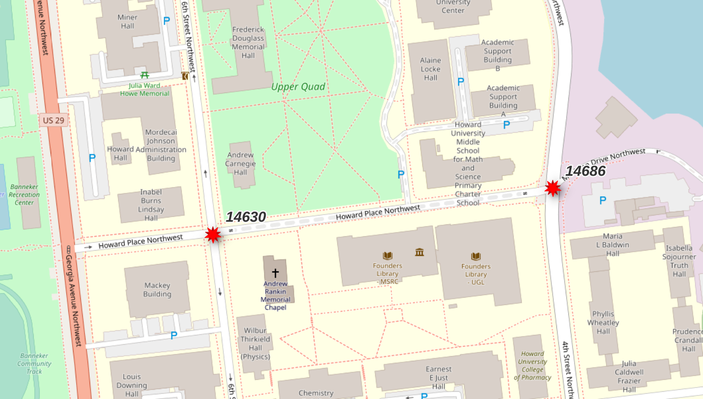
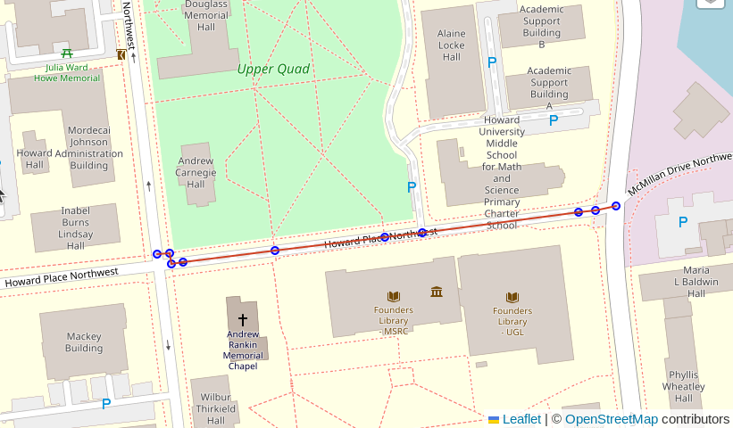
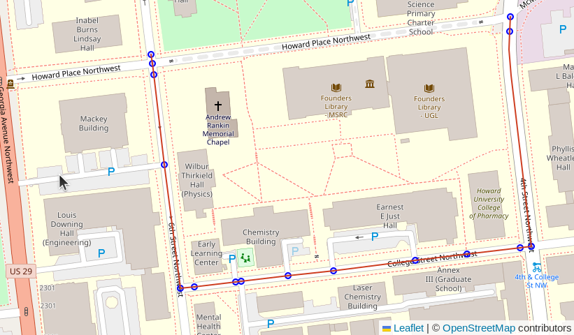
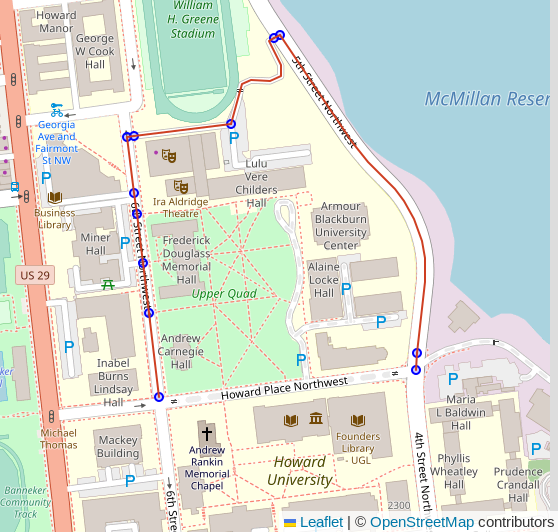

Routing Roads: Legacy (pgRouting 3)
Plan your Upgrade!
This page is a legacy documentation page for versions of pgRouting older than 4.0. This process requires more manual effort to setup and results in lower-quality routing networks compared to the latest procedures.
It is recommended to use pgRouting 4.0 or later, see the latest Routing Roads documentation.
⚠️ This page is no longer maintained.
This page will remain in the PgOSM documentation for the foreseeable future to ensure continuity for a transition to pgRouting 4.0.
Getting Started
Create the pgRouting extension.
CREATE EXTENSION IF NOT EXISTS pgrouting;
Clean the data
The following query does the initial cleanup for preparing OpenStreetMap roads for routing. The following code is converting multi-linestrings to standard linestrings for subsequent processing steps.
CREATE TABLE routing.road_line AS
WITH a AS (
-- Remove as many multi-linestrings as possible with ST_LineMerge()
SELECT osm_id, osm_type, maxspeed, oneway, layer,
route_foot, route_cycle, route_motor, access,
ST_LineMerge(geom) AS geom
FROM osm.road_line
), extra_cleanup AS (
-- Pull out those that are still multi, use ST_Dump() to pull out parts
SELECT osm_id, osm_type, maxspeed, oneway, layer,
route_foot, route_cycle, route_motor, access,
(ST_Dump(geom)).geom AS geom
FROM a
WHERE ST_GeometryType(geom) = 'ST_MultiLineString'
), combined AS (
-- Combine two sources
SELECT osm_id, osm_type, maxspeed, oneway, layer,
route_foot, route_cycle, route_motor, access,
geom
FROM a
WHERE ST_GeometryType(geom) != 'ST_MultiLineString'
UNION
SELECT osm_id, osm_type, maxspeed, oneway, layer,
route_foot, route_cycle, route_motor, access,
geom
FROM extra_cleanup
-- Some data may be lost here if multi-linestring somehow
-- persists through the extra_cleanup query
WHERE ST_GeometryType(geom) != 'ST_MultiLineString'
)
-- Calculate a new surrogate ID for key
SELECT ROW_NUMBER() OVER (ORDER BY geom) AS id, *
FROM combined
ORDER BY geom
;
The above query creates the routing.road_line table. The next step
adds some database best practices to the table:
- Explain why a surrogate ID was added
- Primary key on the
idcolumn - Index on
osm_id
COMMENT ON COLUMN routing.road_line.id IS 'Surrogate ID, cannot rely on osm_id being unique after converting multi-linestrings to linestrings.';
ALTER TABLE routing.road_line
ADD CONSTRAINT pk_routing_road_line PRIMARY KEY (id)
;
CREATE INDEX ix_routing_road_line_osm_id
ON routing.road_line (osm_id)
;
To prepare the OpenStreetMap roads data for routing with the older pgRouting
installation, run the
pgRouting functions pgr_nodeNetwork(), pgr_createTopology(),
and pgr_analyzeGraph().
SELECT pgr_nodeNetwork('routing.road_line', 0.1, 'id', 'geom');
SELECT pgr_createTopology('routing.road_line_noded', 0.1, 'geom');
SELECT pgr_analyzeGraph('routing.road_line_noded', 0.1, 'geom');
Note: These functions were all removed in pgRouting 4.0.
Running the functions shown above will create two (2) new tables usable for routing.
routing.road_line_nodedrouting.road_line_noded_vertices_pgr
Timing note
The pgRouting functions shown in the preceding section can take a
long time to complete on larger regions.
It is often a good idea to run these from psql within a screen
emulator, such as screen or tmux that allow you to disconnect
from the long-running command without cancelling the query.
Determine Costs
Routing requires a cost in order to determine the best route to
take.
The following query creates a simple cost_length column to
the routing.road_line_noded table as a generated column.
This is a simple way to get started with costs for routing.
ALTER TABLE routing.road_line_noded
ADD cost_length DOUBLE PRECISION NOT NULL
GENERATED ALWAYS AS (ST_Length(geom))
STORED;
Note: This is for non-directional routing. See the Routing
onewaysection below for more on directional routing.
Determine route start and end
The following query identifies the vertex IDs for a start and end point
to use for later queries. The query uses an input set of points
created from specific longitude/latitude values.
Use the start_id and end_id values from this query
in subsequent queries through the :start_id and :end_id variables
via DBeaver.
WITH s_point AS (
SELECT v.id AS start_id
FROM routing.road_line_noded_vertices_pgr v
INNER JOIN (SELECT
ST_Transform(ST_SetSRID(ST_MakePoint(-77.0211, 38.92255), 4326), 3857)
AS geom
) p ON v.the_geom <-> geom < 10
ORDER BY v.the_geom <-> geom
LIMIT 1
), e_point AS (
SELECT v.id AS end_id
FROM routing.road_line_noded_vertices_pgr v
INNER JOIN (SELECT
ST_Transform(ST_SetSRID(ST_MakePoint(-77.0183, 38.9227), 4326), 3857)
AS geom
) p ON v.the_geom <-> geom < 10
ORDER BY v.the_geom <-> geom
LIMIT 1
)
SELECT s_point.start_id, e_point.end_id
FROM s_point, e_point
;
┌──────────┬────────┐
│ start_id │ end_id │
╞══════════╪════════╡
│ 14630 │ 14686 │
└──────────┴────────┘
Warning: The vertex IDs returned by the above query will vary. The pgRouting functions that generate this data do not guarantee data will always be generated in precisely the same order, causing these IDs to be different.
The vertex IDs returned were 14630 and 14686. These points
span a particular segment of road (osm_id = 6062791) that is tagged
as highway=residential and access=private.
This segment is used to illustrate how the calculated access
control columns, route_motor, route_cycle and route_foot,
can influence route selection.
SELECT *
FROM routing.road_line
WHERE osm_id = 6062791
;

See
flex-config/helpers.luafunctions (e.g.routable_motor()) for logic behind access control columns.
Simple route
Using pgr_dijkstra() and no additional filters will
use all roads from OpenStreetMap without regard to mode of travel
or access rules.
This query picks a route that traverses sidewalks and
a section of road with the
access=private tag from OpenStreetMap.
The key details to focus on in the following queries
is the string containing a SQL query passed into the pgr_dijkstra()
function. This first example is a simple query from the
routing.road_line_noded table.
Note: These queries are intended to be ran using DBeaver. The
:start_idand:end_idvariables work within DBeaver, but not viapsqlor QGIS. Support in other GUIs is unknown at this time (PRs welcome!).
SELECT d.*, n.the_geom AS node_geom, e.geom AS edge_geom
FROM pgr_dijkstra(
'SELECT id, source, target, cost_length AS cost,
geom
FROM routing.road_line_noded
',
:start_id, :end_id, directed := False
) d
INNER JOIN routing.road_line_noded_vertices_pgr n ON d.node = n.id
LEFT JOIN routing.road_line_noded e ON d.edge = e.id
;

Route motorized
The following query modifies the query passed in to pgr_dijkstra()
to join the routing.road_line_noded table to the
routing.road_line table. This allows using attributes available
in the upstream table for additional routing logic.
The join clause includes a filter on the route_motor column.
From the comment on the osm.road_line.route_motor column:
"Best guess if the segment is route-able for motorized traffic. If access is no or private, set to false. WARNING: This does not indicate that this method of travel is safe OR allowed!"
Based on this comment, we can expect that adding AND r.route_motor
into the filter will ensure the road type is suitable for motorized
traffic, and it excludes routes marked private.
SELECT d.*, n.the_geom AS node_geom, e.geom AS edge_geom
FROM pgr_dijkstra(
'SELECT n.id, n.source, n.target, n.cost_length AS cost,
n.geom
FROM routing.road_line_noded n
INNER JOIN routing.road_line r ON n.old_id = r.id
AND r.route_motor
',
:start_id, :end_id, directed := False
) d
INNER JOIN routing.road_line_noded_vertices_pgr n ON d.node = n.id
LEFT JOIN routing.road_line_noded e ON d.edge = e.id
;

Route oneway
The route shown in the previous example now respects the access control and limits to routes suitable for motorized traffic. It, however, did not respect the one-way access control. The very first segment (top-left corner of screenshot) went the wrong way on a one-way street. This behavior is a result of the simple length-based cost model.
The oneway column in the road tables uses
osm2pgsql's direction data type which resolves to int2 in Postgres.
Valid values are:
0: Not one way1: One way, forward travel allowed-1: One way, reverse travel allowedNULL: It's complicated. See #172.
Assuming a noded roads table routing table, bring over the oneway detail
ALTER TABLE routing.road_line_noded
ADD oneway INT2 NULL
;
UPDATE routing.road_line_noded rn
SET oneway = r.oneway
FROM routing.road_line r
WHERE rn.old_id = r.id AND rn.oneway IS NULL
;
Forward and reverse costs
Calculate forward cost.
ALTER TABLE routing.road_line_noded
DROP COLUMN IF EXISTS cost_length
;
-- Cost with oneway considerations
ALTER TABLE routing.road_line_noded
ADD cost_length NUMERIC
GENERATED ALWAYS AS (
CASE WHEN oneway IN (0, 1) OR oneway IS NULL
THEN ST_Length(geom)
WHEN oneway = -1
THEN -1 * ST_Length(geom)
END
)
STORED
;
Reverse cost.
-- Reverse cost with oneway considerations
ALTER TABLE routing.road_line_noded
ADD cost_length_reverse NUMERIC
GENERATED ALWAYS AS (
CASE WHEN oneway IN (0, -1) OR oneway IS NULL
THEN ST_Length(geom)
WHEN oneway = 1
THEN -1 * ST_Length(geom)
END
)
STORED
;
This query uses the new reverse cost column, and changes
directed from False to True.
SELECT d.*, n.the_geom AS node_geom, e.geom AS edge_geom
FROM pgr_dijkstra(
'SELECT n.id, n.source, n.target, n.cost_length AS cost,
n.cost_length_reverse AS reverse_cost,
n.geom
FROM routing.road_line_noded n
INNER JOIN routing.road_line r ON n.old_id = r.id
AND r.route_motor
',
:start_id, :end_id, directed := True
) d
INNER JOIN routing.road_line_noded_vertices_pgr n ON d.node = n.id
LEFT JOIN routing.road_line_noded e ON d.edge = e.id
;
